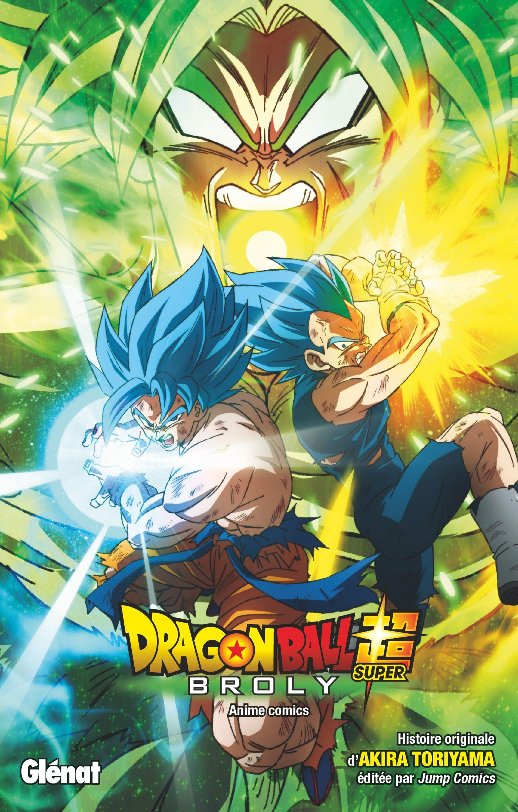

Esta é a história de um novo Saiyajin. A Terra está em paz depois do fim do Torneio do Poder. Goku não quer nada além de treinar, já que agora compreende quantas pessoas fortes existem nos universos que ele ainda não conheceu. Então, um dia, um Saiyajin desconhecido chamado Broly aparece diante de Goku e Vegeta. Como é possível que um Saiyajin esteja na Terra quando ele deveria ter sido destruído junto com o Planeta Vegeta? De volta do inferno mais uma vez, Freeza também aparece e os três Saiyajins que tiveram caminhos completamente diferentes se encontram em um intenso conflito.

Chihiro e seus pais estão se mudando para uma cidade diferente. A caminho da nova casa, o pai decide pegar um atalho. Eles se deparam com uma mesa repleta de comida, embora ninguém esteja por perto. Chihiro sente o perigo, mas seus pais começam a comer. Quando anoitece, eles se transformam em porcos. Agora, apenas Chihiro pode salvá-los

Tanjiro Kamado, junto com Inosuke Hashibira, um garoto criado por javalis que usa uma cabeça de javali, e Zenitsu Agatsuma, um garoto assustado que revela seu verdadeiro poder quando dorme, embarca no Trem Infinito em uma nova missão com o Hashira de Fogo, Kyojuro Rengoku, para derrotar um demônio que tem atormentado o povo e matado os caçadores de oni que se opõem a ele!
Mitsuha é a filha do prefeito de uma pequena cidade, mas sonha em tentar a sorte em Tóquio. Taki trabalha em um restaurante em Tóquio e deseja largar o seu emprego. Os dois não se conhecem, mas estão conectados pelas imagens de seus sonhos.